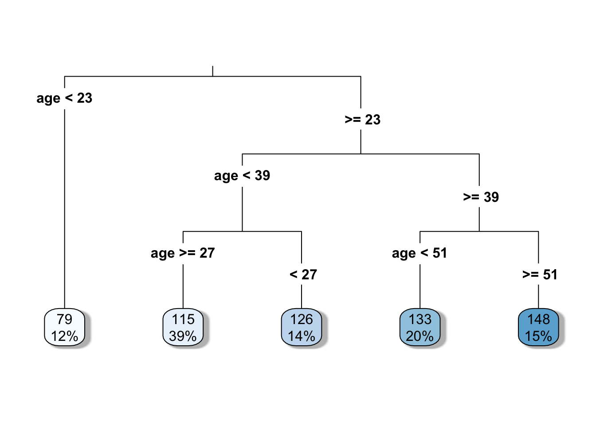
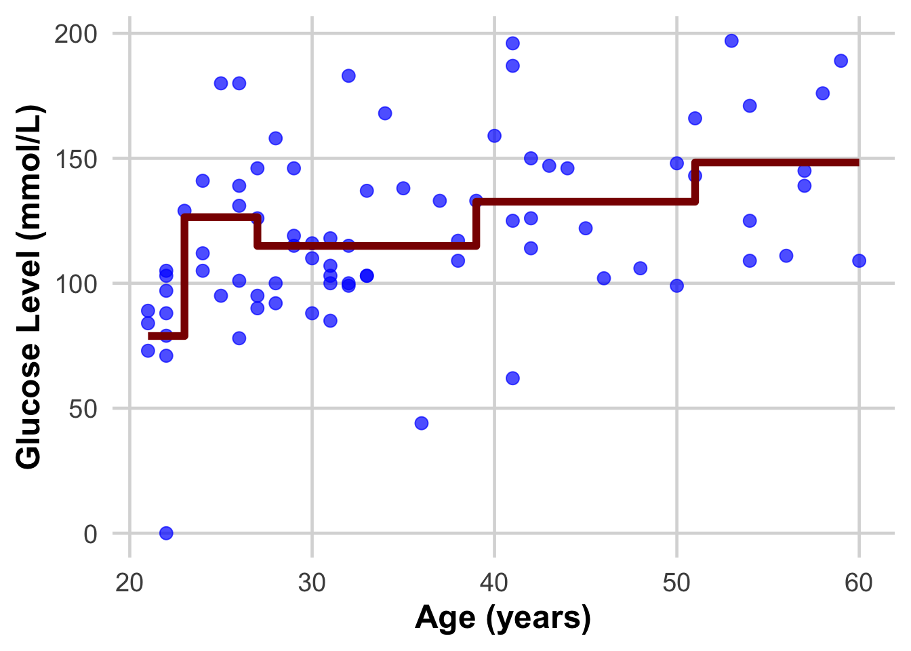
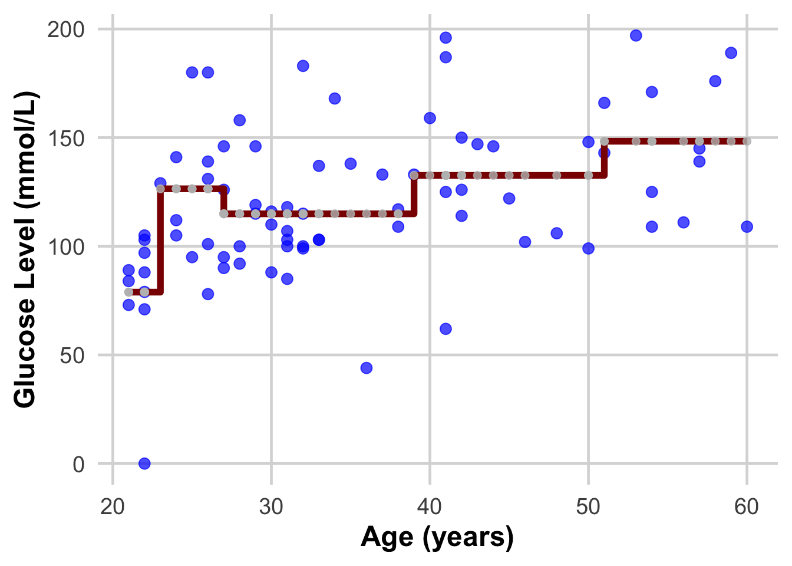

(1) Supervised Learning Models
Mention that you can just copy the code and insert it as an Rmd!
Supervised learning models can make predictions after seeing lots of data with the correct answers and then discovering the connections between the elements in the data that produce the correct answers. This is like a student learning new material by studying old exams that contain both questions and answers. Once the student has trained on enough old exams, the student is well prepared to take a new exam. These ML systems are “supervised” in the sense that a human gives the ML system data with the known correct results
Packages needed for this session:
Load diabetes dataset (already available by installing package mlbench). This is a toy dataset that has been extensively used in many machine learning examples
data("PimaIndiansDiabetes")In the environment now you should see PimaIndiansDiabetes dataframe loaded
Lets now select only two of this columns age and glucose and store it as a new dataframe
Recall this is the same thing as the below code, but using the library tidyverse’s data wrangling options. For more learning check the exercise from data pre-processing class: https://rintrouob.quarto.pub/hds-msc---module-3---preprocessingeda/HealthyR_Summary.html
Data <- PimaIndiansDiabetes[, c("age", "glucose")]We have 768 observations/rows, so lets cut it down to just 30, for the sake of easier visualization and take a look
DataSmaller <- Data[1:80,]
head(DataSmaller) age glucose
1 50 148
2 31 85
3 32 183
4 21 89
5 33 137
6 30 116Now lets visualize this relationship
ggplot(DataSmaller, aes(x = age, y = glucose)) +
geom_point() +
labs(x = "Age (Feature)", y = "Glucose (Label)")
A Supervised Learning Algorithm: Linear Regression
Suppose we want to predict our glucose level based on our age with this dataset. We could fit a learning algorithm to our dataset and create a predictive model. In this case the learning algorithm is going to be linear regression. ggplot already contains the functionality of fitting and visualizing this linear regression model through geom_smooth as seen below:
ggplot(DataSmaller, aes(x = age, y = glucose)) +
geom_point() +
labs(x = "Age (Feature)", y = "Glucose (Label)") +
geom_smooth(method='lm', se = FALSE)`geom_smooth()` using formula = 'y ~ x'
This amounts to using the lm function to fit the data as you have seen in the Statistics Module statistics recap
To recap, the linear regression algorithm is as follows:
In ML, we write the equation as
\[ y = \beta_0 + \beta_1\, x_1 \]
where
- y = outcome label ( column to predict )
- _0 = sometimes known as bias, it is the intercept of the line and is a parameter of the model
- _1 = weight of the feature/column/x 1 - same as slope in equation of a line (if we only had 2 dimensions) and is a parameter of the model
- x_1 = feature/column 1/ input data
And how do we find out the two paramters? They are the result of fitting the learning algorithm (linear regression) to the data. Once we have them defined, we can then say we have the predictive algorithm where, if we were to have a new sample (\(x_i\)) with age information, we could find out the predicted glucose (\(y_i'\)).
As you will see later, te way this fitting works, is by finding the parameters _0 and _1 which make the best fit line.And this is calculated through optimization of the loss/cost function through either ordinary least squares (OLS) or gradient descent (do not worry about this just now!)
More specifically, when you use the function lm below or any other function that fits a linear model in R or Python, _0 and _1 or _n (depending on the amount of features you are including in your model) are being calculated using OLS
#ls_fit <- lm(y ~ x, data = data)`
ls_fit <- lm(glucose ~ age, data = DataSmaller)Display a summary of fit
summary(ls_fit)
Call:
lm(formula = glucose ~ age, data = DataSmaller)
Residuals:
Min 1Q Median 3Q Max
-102.94 -16.49 -3.56 19.69 73.07
Coefficients:
Estimate Std. Error t value Pr(>|t|)
(Intercept) 73.6775 11.9684 6.156 3.02e-08 ***
age 1.3301 0.3237 4.110 9.71e-05 ***
---
Signif. codes: 0 '***' 0.001 '**' 0.01 '*' 0.05 '.' 0.1 ' ' 1
Residual standard error: 32.35 on 78 degrees of freedom
Multiple R-squared: 0.178, Adjusted R-squared: 0.1674
F-statistic: 16.89 on 1 and 78 DF, p-value: 9.715e-05coef(ls_fit)(Intercept) age
73.677460 1.330072 If we include this coefficients and draw the line ourselves, we will obtain the same thing as the geom_smooth above.
#| fig-align: 'center'
#| fig-width: 6
#| fig-height: 4
ggplot(DataSmaller, aes(x = age, y = glucose)) +
geom_point() +
labs(x = "Age (Feature)", y = "Glucose (Label)") +
geom_abline(intercept = coef(ls_fit)[1], slope = coef(ls_fit)[2], color="red",
linetype="dashed", size=1.5)Warning: Using `size` aesthetic for lines was deprecated in ggplot2 3.4.0.
ℹ Please use `linewidth` instead.
The predictive model then (with fiited parameters) is:
\[ glucose = 73.68 + 1.33*age \] If we now have a new sample coming with \(age = 45\), what is the predicted glucose? Can you include it in the plot?
age_newsample<- 45
predicted_glucose <- 73.68 + 1.33*age_newsample
print(predicted_glucose)[1] 133.53This is the same as doing:
predict(ls_fit, newdata = data.frame(age = 45)) # we had to create a new dataframe with one value of age for this to work, as it normally expects more than 1 smple, and more features! 1
133.5307 ggplot(DataSmaller, aes(x = age, y = glucose)) +
geom_point() +
geom_point(x = age_newsample,y = predicted_glucose, colour = "grey", size = 5 ) +
labs(x = "Age (Feature)", y = "Glucose (Label)") +
geom_abline(intercept = coef(ls_fit)[1], slope = coef(ls_fit)[2], color="red",
linetype="dashed", size=1.5)
Question!! If my new sample is \(age = 10\), can I still predict glucose, even though none of my data used to create the model had a sample with age = 10?
age_newsample<- 10
predicted_glucose <- 73.68 + 1.33*age_newsample
print(predicted_glucose)[1] 86.98ggplot(DataSmaller, aes(x = age, y = glucose)) +
geom_point() +
geom_point(x = age_newsample,y = predicted_glucose, colour = "grey", size = 5 ) +
labs(x = "Age (Feature)", y = "Glucose (Label)") +
geom_abline(intercept = coef(ls_fit)[1], slope = coef(ls_fit)[2], color="red",
linetype="dashed", size=1.5) +
xlim(0, 100)
Yes we can! Another thing is how confident we are about the predicted value, but we will discuss that later on.The model is an infinite line, mapping age to glucose (so we could even map negative values, or very high age values (e.g 1000) and obtain a predicted glucose - but it would make no sense).
| # EXERCISE: Understand the role of the dataset in predictive modelling |
| Lets fit the decision tree learning algorithm in different number of training points (you will learn more about how decision trees work next Monday, but as you have seen in the previous classes, learning algorithms are already coded for you as functions, so you can apply them already) |
| ::: {.cell} |
| ```{.r .cell-code} library(rpart) #has functions for decision tree algorithm library(rpart.plot) library(ggplot2) |
| #Decision tree algorithm tree_model <- rpart(glucose ~ age, data = DataSmaller, method = “anova”) |
| # Plot the decision tree rpart.plot(tree_model, type = 3, fallen.leaves = TRUE, box.palette = “Blues”, shadow.col = “gray”) ``` |
| ::: {.cell-output-display}  ::: ::: |
| ::: {.cell} |
{.r .cell-code} # Print the model for further details print(tree_model) |
| ::: {.cell-output .cell-output-stdout} ``` n= 80 |
| node), split, n, deviance, yval * denotes terminal node |
| 1) root 80 99307.69 120.5625 2) age< 22.5 10 8122.90 78.9000 3) age>=22.5 70 71347.49 126.5143 6) age< 38.5 42 34265.90 117.9524 12) age>=26.5 31 22403.87 114.9355 13) age< 26.5 11 10784.73 126.4545 7) age>=38.5 28 29384.43 139.3571 14) age< 50.5 16 16919.75 132.6250 15) age>=50.5 12 10772.67 148.3333 * ``` ::: ::: |
| ::: {.cell} |
{.r .cell-code} #Get the predicted glucose values DataSmaller$predicted_glucose <- predict(tree_model, newdata = DataSmaller) ::: |
| This we are now introducing the dataset that we fitted our learning algorithm on, as if they were new samples we want to have glucose predicted on. Do you see how the real value and the predicted one differ? The closer we can get them to be the better model we will have! |
| ::: {.cell} |
{.r .cell-code} View(DataSmaller) ::: |
| STOP HERE AND MAKE SURE YOU HAVE UNDERSTOOD THIS CONCEPT |
| Do these plots help understand? |
| ::: {.cell} |
{.r .cell-code} ggplot(DataSmaller, aes(x = age, y = glucose)) + geom_point(size = 3, color = "blue", alpha = 0.7) + # Larger, colored points with some transparency geom_step( aes(y = predicted_glucose), colour = "darkred", size = 2) + # Step function for #geom_step(aes(y = predicted_glucose), colour = "darkred", size = 2) + # labs( x = "Age (years)", y = "Glucose Level (mmol/L)") + theme_minimal(base_size = 18) + # Use a clean theme with larger base font size theme( plot.title = element_text(face = "bold", hjust = 0.5), # Center and bold title plot.subtitle = element_text(hjust = 0.5), # Center subtitle axis.title = element_text(face = "bold"), # Bold axis titles for readability panel.grid.major = element_line(color = "grey85"), # Lighten grid for subtlety panel.grid.minor = element_blank() # Remove minor grid lines for clarity ) |
| ::: {.cell-output-display}  ::: ::: |
| ::: {.cell} |
{.r .cell-code} ggplot(DataSmaller, aes(x = age, y = glucose)) + geom_point(size = 3, color = "blue", alpha = 0.7) + # Larger, colored points with some transparency geom_step( aes(y = predicted_glucose), colour = "darkred", size = 2) + # Step function for geom_point(aes(x = age, y = predicted_glucose), size = 2, color = "grey", alpha = 0.8) + labs( x = "Age (years)", y = "Glucose Level (mmol/L)") + theme_minimal(base_size = 18) + # Use a clean theme with larger base font size theme( plot.title = element_text(face = "bold", hjust = 0.5), # Center and bold title plot.subtitle = element_text(hjust = 0.5), # Center subtitle axis.title = element_text(face = "bold"), # Bold axis titles for readability panel.grid.major = element_line(color = "grey85"), # Lighten grid for subtlety panel.grid.minor = element_blank() # Remove minor grid lines for clarity ) |
| ::: {.cell-output-display}  ::: ::: |
| DISCUSS THIS WITH YOUR PARTNER AND EXPLAIN IT TO EACH OTHER |
Now lets fit the decision tree algorithm in an even smaller set of points:
DataEvenSmaller <- DataSmaller[1:30, ]
dim(DataEvenSmaller)[1] 30 3- What is the model created?
- How does it differ from the previous?
- Do the same with the linear regression model. What changes?